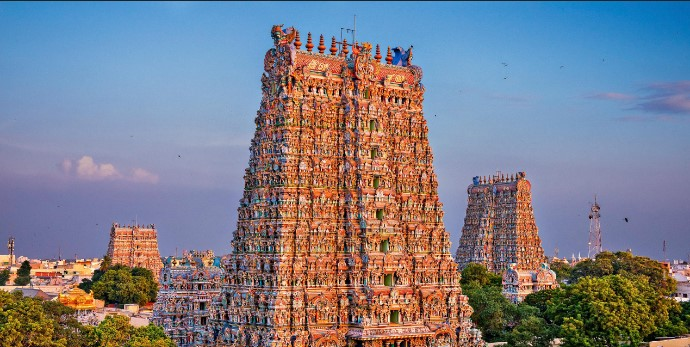
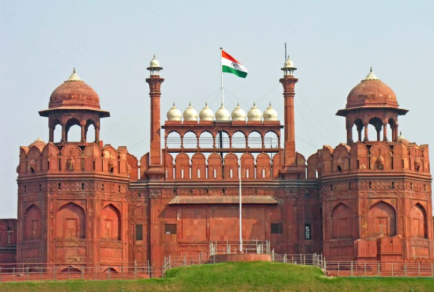
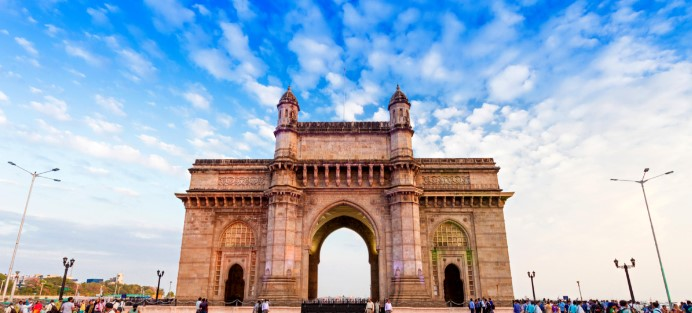
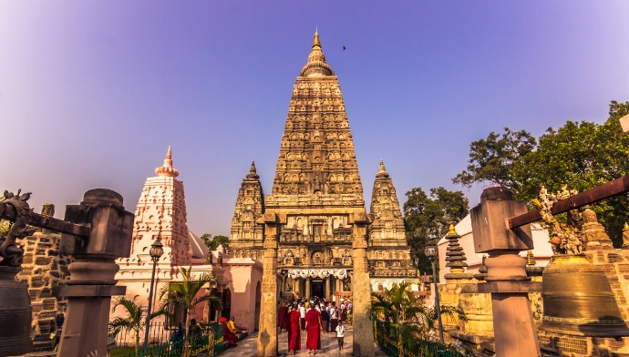

Explore India: A Land of Timeless Beauty
India is part of the continent of Asia. Most of India forms a peninsula, which means it is surrounded by water on three sides. The world's highest mountain range, the Himalaya, rises in the north. The southeast is bordered by the Bay of Bengal, and the southwest is bordered by the Arabian Sea.Indias most famous monument is the Taj Mahal
Places to vizit in India!
| Meenakshi Amman Temple | |
|---|---|
|  | Unique among Indian temples, Meenakshi Amman Temple is dedicated to a female deity, the fish-eyed goddess Meenakshi. Her idol, distinguished by three breasts, embodies a fascinating legend. The third breast, a symbol of a curse, is said to have disappeared upon her meeting with Sunderashwar, her consort. |
| Red Fort | |
| The Red Fort has been a symbol of power since the reign of Shah Jahan, has witnessed the change in Indian history to British rule, and was the place where Indian independence was first celebrated, and is still celebrated today. |  |
| Gateway Of India(Mumbai) | |
|  | The Gateway of India is an arch monument built during the 20th century in Bombay, India. The monument was erected to commemorate the landing of King George V and Queen Mary at Apollo Bunder on their visit to India in 1911. |
| Bodh Gaya | |
| Bodhgaya. Bodhgaya is one of the most important and sacred Buddhist pilgrimage center in the world. It was here under a banyan tree, the Bodhi Tree, Gautama attained supreme knowledge to become Buddha,the Enlightened One. |  |